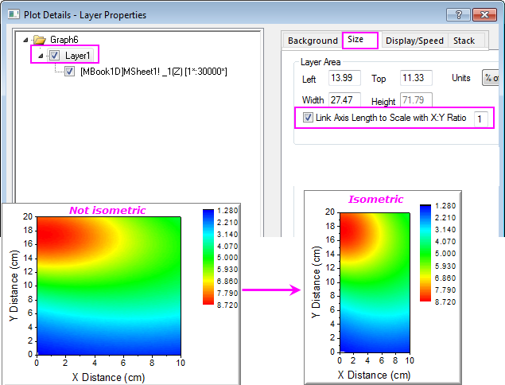
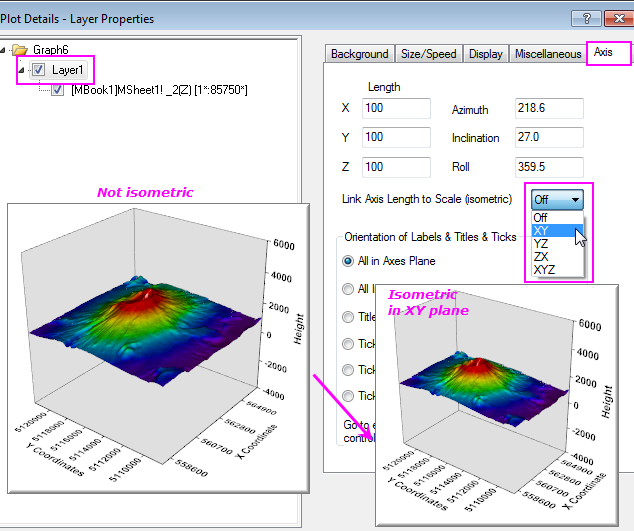

FAQ-111 Wie lege ich eine einheitliche Achsenlänge fest?
axis-isometric
Letztes Update: 08.01.2019
Standardmäßig ist die Achsenlänge in einem Origin-Diagramm mit den Layerdimensionen verknüpft, so dass die gleiche Skala in verschiedenen Achsen möglicherweise nicht in identischen Längen angezeigt wird.
Um die Achsenlänge anzugleichen, können Sie die Achsenlänge mit dem Achsenskalierungsbereich verknüpfen. Dadurch ist es möglich:
- eine (identische oder) 1:1-Skalen für die X-, Y- und/oder Z-Achsen beizubehalten
- identische (oder gleiche) Y-, Y- und/oder Z-Skalen zu erstellen
- das Seitenverhältnis von Skala und Achsenlänge beizubehalten
- ein quadratisches Bild mit der gleichen X-/Y-Skala zu erstellen
- die Achsen proportional zur Länge zu haben
Um die Achsenlänge mit dem Achsenskalierungsbereich zu verknüpfen:
- Bei 2D-Diagrammen
- Klicken Sie auf Format: Layer, um den Dialog Details Zeichnung zu öffnen, wechseln Sie zur Registerkarte Größe und aktivieren Sie das Kontrollkästchen Achsenlänge mit Skalierung mit Verhältnis X:Y verknüpfen. Belassen Sie das Bearbeitungsfeld auf dem Standardwert von 1.

- Bei 3D-Diagrammen
- Klicken Sie auf Format: Layereigenschaften, um den Dialog Details Zeichnung zu öffnen, und wechseln Sie zur Registerkarte Achse, um eine gewünschte Option aus der Auswahlliste Achsenlänge mit Skalierung (isometrisch) verknüpfen auszuwählen.

Schlüsselwörter: Achsenlänge, isometrisch, Quadrat, gleiche Länge, Seitenverhältnis, proportionale Achsen, proportionale Abstände, proportionale Skalierung, quadratisches Gridding, festes Skalierungsverhältnis